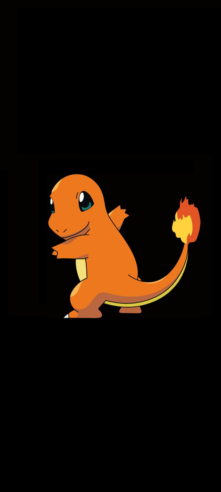

Charmander (/ˈtʃɑːrmændər/), known as Hitokage (ヒトカゲ) in Japan, is a Pokémon species in Nintendo's and Game Freak's
Pokémon franchise. Created by Atsuko Nishida,[1] Charmander first appeared in the video games Pokémon Red and Blue and subsequent sequels, later appearing in
various merchandise, spinoff titles, and various movies, animated and printed adaptations of the franchise. The end of a Charmander's tail is alight with a flame,
and the flame's size reflects both the physical health and the emotions of the individual. It is known as the Lizard Pokemon.
Charmander is one of three 'starter' Pokémon that can be selected at the beginning of Pokémon Red and Blue, and their remakes, Pokémon FireRed and LeafGreen. In
the anime, Ash acquires a Charmander early in the series, and it became one of his most used Pokémon. In the Pokémon Adventures manga, Blue receives a Charmander
from his grandfather Professor Oak. Since it appeared in the Pokémon series, Charmander has received generally positive reception. Charmander first appeared in
episode 11 of Pokémon Indigo League ("Charmander – The Stray Pokémon" (The Stray Pokémon – Hitokage)). In the episode, Charmander is left by its owner, Damian,
and is rescued by Ash and Brock. When Damian sees how powerful Charmander is, he calls Charmander back. However, because of Damian's abuse, Charmander chooses
to follow the group that saved its life, and becomes Ash's Pokémon. In the series, the narrator stated that if a Charmander's tail flame goes out, it dies.
Charmander is used by Ash throughout his adventures and is seen in special episodes in the future.

Charmander evolves into Charmeleon at level 16, who then evolves into Charizard at level 36, which
was originally its last form. Since the release of Pokémon X and Y, Charizard can mega evolve into 2 different types of Mega Charizard, which are Mega Charizard X
or Mega Charizard Y, for the duration of a battle. This gives it temporary upgraded stats and a major damage bonus. Charmander was one of the Pokémon that survived
the National Pokédex cuts introduced in Pokémon Sword and Shield in 2019.
Charmander was designed as a fire Pokémon for the first generation of Pocket Monsters games Red and Green (which were localized outside Japan as Pokémon Red and Blue)
by Atsuko Nishida, who based its design on Charizard in such a way that it was difficult to tell it would have evolved into the latter Pokémon.[1] Originally called
"Hitokage" in Japanese, Nintendo decided to give the various Pokémon species "clever and descriptive names" related to their appearance or features when translating
the game for western audiences as a means to make the characters more relatable to American children.[2] As a result, the species was renamed "Charmander", a
portmanteau of "char", meaning burnt, and "salamander".[3]
Charmander are small, bipedal lizard-like Pokémon native to Kanto. They have blue eyes, orange skin, three-toed clawed feet, yellow bellies, and a single yellow pad
covering most of the soles of their feet. While the Pokémon Red and Green sprites made by Atsuko Nishida featured only three fingers on each hand, like Charmeleon
and Charizard, the artwork drawn by Ken Sugimori for those games depicted Charmander as having an additional thumb on each hand. Since Pokémon Black and White, a
new updated artwork was released in which Charmander has just three fingers on each hand. Said updated design has since been used consistently in the anime, including
the movies and specials like Pokémon Origins, as well as in official artwork used in merchandise and in plushies, dolls and figurines, accompanying the artwork by
Ken Sugimori as well as the 3D CG models and the artwork derived from those that still feature the four-fingered hand. Noticeably, the Charmander artwork made by
Nishida for the Trading Card Game in 2018 showed Charmander as having just three fingers on each hand.
The end of a Charmander's tail is alight with a flame, and the flame's size reflects both the physical health[4] and the emotions of the individual.[5] When it rains, steam is said to spout from the tip of its tail.[6] If the flame were to ever go out, the Charmander would die.[7] When Charmander receives enough experience from battles, it evolves into Charmeleon (at level 16 in the video games), and later Charizard. With the help of the Mega Stone, it can further Mega Evolve into Mega Charizard X/Mega Charizard Y. The idea to feature Charmander and the other Red and Blue starters in a significant role in Pokémon X and Y came about a year and a half into the development of the games. The Mega Evolutions for the three Pokémon's final forms were created, and the designers decided that they should give players an opportunity to find one of these Pokémon in order to see their Mega Evolved form